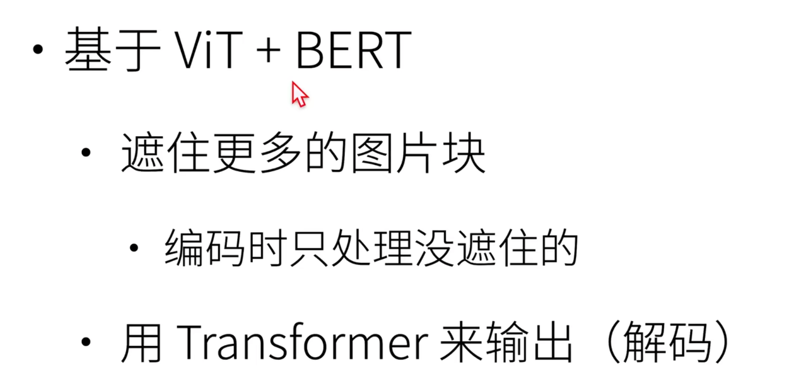
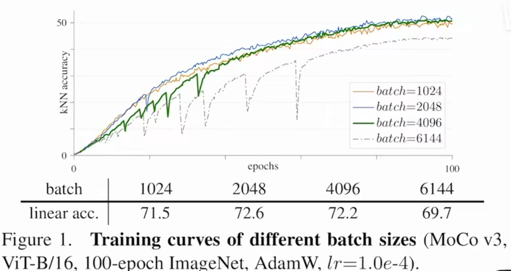

李沐- 论文经验
如何找研究想法
1. 打补丁
读论文的时候读到的是整个故事，但如果要自己想idea的时候要把原文章里的东西蒸馏出来。反过来看MAE它其实讲的是一个很简单的故事。

基于MAE可以思考出以下几个想法：
第一个想法，遮住图像块其实是一个数据增强（用来尽量使模型不那么过拟合），在图像里加很多噪音进去，确实模型也没有过拟合，训练到1600轮的时候性能仍在提升。数据增强的坏处也在于会让训练特别慢，训练到1600轮的时候还没有收敛，那在更大数据集更大ViT架构上时怎么办。所以会想能不能做一些别的数据增强，使得不需要花那么多时间去训练同时效果也不会差。
第二个关注到主干网络ViT，作者也说可以用一些新的架构可能效果更好。所以我们会想是不是能够用一些新的模型来替换掉ViT。比如大家发现其实在Transformer里自注意力也好MLP也好其实都是可以替换的，只要整个架构摆在那里，效果也是不错的，甚至可以看看换成CNN行不行。
第三个回到BERT，BERT在做损失的时候其实有两个损失函数，一个是完形填空一个是句子对的匹配，所以基于MAE思考是不是也可以增加一个额外的损失函数，比如近期比较火的对比学习，是不是也能加进来做一个额外的损失函数。
除了这三个想法之外，在看MAE论文的时候，可以在每一个细节都仔细揣摩，如果是我来做有没有别的办法来做它，从而得到一些新的想法。可以有很多想法，但是最后还是要去验证，要真的去做实验看哪个效果最好。很多时候也是有一个想法做一个实验，发现其实不是那么回事，但是通过观察实验的结果得到一些新的想法，然后再开始做实验。所以在实验中发现的一些想法，对最后的贡献都有那么一点点，把这些东西揉起来也可能成一篇文章，比如MAE揉了两个东西在里面。但是要注意不要在一个上面打太多补丁，如果东一块西一块会显得比较脏，最好在打补丁的时候能有一个故事把它串起来。
MAE虽然两个补丁比较远，但是多少在Intro里通过一个故事串起来了，读起来没有很大违和感，这很检验写作。有时候为了故事的连续性可以把一些不那么重要的补丁拿掉也是可以的。但最后要选择哪篇论文来打补丁也是比较讲究的，需要选新的空间比较大的论文，如果一篇论文已经是一个打补丁的论文了，你在上面很可能会比较难打补丁，因为作者在一开始的时候可能已经试过很多东西了，根本就不work。所以这时候最好选一些脑洞比较大的论文，比如ViT一出来马上又大把去跟进（比较新），另外需要掂量一下资源和算力。
你也可以去做一些新的模型，或者一些改进使得整个训练加速，不是说把精度提得更高而是让你的训练更快更便宜。
什么是好的科研工作？
如何判断现在的结果够不够投一篇论文？能够投什么级别的期刊或者会议？写论文的时候怎么讲我的故事使得读者能够更容易地看到我研究工作的意义？
李沐的经验：用有新意的方法有效地解决一个研究问题。
研究问题和工程问题的区别：
- 工程问题：算法很占内存跑不了，但是可以通过买新内存解决或者优化代码实现使得在不改变算法的同时节省内存。模型精度不够看看多标点数据或者在采样的时候用更好的传感器是否能解决。如果对一个问题你能提出几个解决方案，而且方案在没有试的时候你就知道这个方案一定是能够解决问题的。
- 研究问题：比较困难，你不知道怎么解决它，或者你有一些想法但是在试之前不知道这个想法能不能行，一般的研究问题你前面的方法通常是不行的。
有效是一个相对的概念，因为绝大部分论文无法彻底解决一个研究问题，比如人工智能做了50年但还没有真正有智能。这里的有效性是说相对于之前的工作，我解决这个问题的有效性有所提升。
新意novelty也是一个相对的概念，因为就算是一个很有新意的东西，经过一段时间之后大家就都知道了，就不再有新意了。所以新意的定义是说对你在的研究社区绝大部分研究者来说是有新意的，也就是和你同方向的研究生和博士生，你用到的方法他们之前没想到过。所以这并不要求你的方法在之前都没有人提到过，很有可能在很多年前别人已经用过了，但随着时间推移大家已经不记得了。或者你用到的方法在别的领域有研究者在用，但你所在的研究领域大家还不是很了解。
最后在写文章的时候也应该能总结成这么一句话：你用什么方法怎么样有效地解决了什么研究问题。具体来说，在写摘要的时候，先说我要解决什么样的研究问题，我的方法的新意在哪里，最后我的结果是怎么样的。
这个方法的量化版本：新意度x有效性x问题大小=研究价值
有效：实验结果的好坏
问题的大小：你这个研究领域里面有多少个研究者发了多少篇论文
新意度：跟前面的工作相比你的新奇程度有多少
Novelty in Science
很多审稿人经常把复杂度、困难度和技术度与新意度搞混在一起。Michael J. Black建议在评审的时候应该把新意度这个词拿掉，把它换成另外一个词叫做优美。偏理论的研究比如说数学、物理，之前用来评价论文价值的公式就不再适用了，因为对一个理论问题来说，你很难判断它这个领域的大小，通常来说每个人研究很不一样的一些问题，每个领域可能也就那么几个人在研究，有效性也不是很好判断，因为一个定理总是正确的，到底说这个定理能用在什么地方，其实一开始大家都不知道，所以理论研究者对一个文章的判断，Michael经常会使用两个词，第一个是深刻（你是不是揭示了一些本质的东西）。第二个是优美，你的定理的本身和你证明是不是有美感，但优美这个词就不那么好量化，它跟你个人的审美观跟你的品味也很相关。
优美这个词的好处是它把技术性和复杂性从里面剥离出来了，因为美跟技术跟复杂是没有太多关系的，Michael举了一个具体例子，是说你一个油画简单也可以好看，复杂也可以好看。然后作者举了两个画家的例子，第一个是毕加索， 他画人的时候相对来说比较简单。第二个画家是伦勃朗，他非常的追求细节和技术的手法。不管这两位画家他在作品的复杂度上的区别，以及他在创作过程艰难度上有区别，但是从最后的作品来讲，我们都能欣赏出美来。因为美不好定义，所以用一些反例说哪一些是常见的误区：
- 用复杂度来衡量新意度。Michael说很多审稿人认为一个很简单的想法是没有新意的。（一个常见的但是又不是那么正确的审稿意见举例：这篇文章的想法非常简单，他就是把在损失中的一项给改了，剩下的跟前面的工作是一模一样的，所以这篇文章没有什么新意。）正确的观点是如果之前没有想到要这么改，那么就是有新意的。特别的说，如果一个小的改动可以导致比较大的结果，而且可以得到新的损失的话，那么它就是有新意的。套用我们之前的公式是说，因为之前没有人想过这么改，所以它就是有新意的，它又特别有效的话，那么这篇文章的贡献那就是非常大的。这样的审稿人会使得学生会去把他一个想法做得比较复杂或者写得比较复杂，使得审稿人认为价值更高一些，但Michael更喜欢简单性，而不是没有必要的复杂性。越简单越好，如果你能把一个神经网络拿过来，把其中的一项改了之后，然后效果非常好，它远远的好于你把整个神经网络换成一个全新的但是看上去更复杂一点的网络。从长远角度来讲，大家其实不关心你一个工作到底是发在一个什么的会议上，而是你的工作对后人的影响力有多大，这个才是最重要的。越简单越有效，影响力也就就越大。
- 用困难度来衡量你的新意度。中一篇顶会特别难，所以审稿人可能会认为想到你这个想法或者是你的所有的技术细节必须要很困难得到才行，论文的作者必须要呕心沥血才配在顶会上发表一篇文章。比如说你提出来的模型必须要非常复杂。一个例子是Alphafold2整个模型是非常复杂的，或者说你的实验得非常到位，把所有的数据都给你跑一遍，或者说你得考虑到方方面面在不同的地方使用都行。所以没有太多经验的审稿人会喜欢你真的为你的工作付出了非常艰辛的努力。但Michael认为如果是一个简单的想法，它能够揭示某些东西的核心的存在，它把别的没有太多必要性的东西去除，是对研究工作者最有用的东西。即你不需要真的在所有的细节上、所有的方方面面都做得非常好，你只要把你最核心的那个想法拿出来，能证明它有一定的有效性就行了。例如GAN这篇文章从现在角度来讲，它的效果真的是太差了，在当年来看它的效果也没有比别的方法好太多。它就是简单用个MLP把整个算法的框架给大家讲出来，然后揭示了它的核心：对抗的思想，它也成为了经典论文。效果这东西不那么关键，就算当年的GAN做到现在的style干那种很逼真的效果，它影响力也不一定会更大。简单的算法可以很重要，但也可以是显然的。一个简单的想法如果比现在最好的结果要好，那么它很有可能就是不显然的。那就意味着这篇文章作者可能会抓住了某些东西，而且整个领域的研究者会比较感兴趣，这也是之前公式里面说的有效性（方法简单但非常有效），那么它的价值当然是非常大的。如果你的想法简单但有效性很差的话，那很有可能是没有什么价值的。
- 用惊讶来衡量新意度。新意度和惊讶是非常相关的。一个新的想法肯定能让别人惊讶，这是一个这个领域之前没有想到过的方法。但是如果完全用惊讶来衡量信誉度的话，会有一定的问题，如果你听到一个好的想法，那么你可能当时会觉得特别惊讶。如果这个想法质量真的很高，你会觉得这个太自然了，你听完它之后，你就觉得这个东西就是自然而然就应该怎么样，那么你就不会感到惊讶，你觉得这个事情就应该是这么做的。比如说一个常见的评审意见是说：你这个想法太显然了，因为你就是把这两个大家都知道的想法跟你并在了一起，就是A+B的工作。作者说作为一个审稿人，你在这么评价别人工作的时候，你要稍微想一想，是说你很有可能是在听到这个想法之后会觉得特别显然，但是在你没有听到它之前，你可能就没有想到过。所以你要衡量一个想法新意度的时候一定要去想你没有在听到它之前你会怎么想。或者你要去回想，你在听到或者看到这个想法的第一个时间的时候，你下意识的反应是怎么样的，而不是说过了几天之后回想这个实在是太简单了。另外的例子是MAE，知乎上有大家评论说这篇文章太简单了，有什么好大惊小怪的。确实你在读完它之后，你会觉得它就是那么几个简单的技术放在一起，但是你之前可能就没想到过或者说你在读到它的时候你可能会觉得很惊讶，那么简单的一个想法，效果原来那么好。
- 用技术上的新意性来衡量一篇工作的新意性。当然是提出一个新的算法、一个新的模型，里面有新意当然就挺好的。但是对一篇文章来说，它有很多别的种类的文章，Michael举了两个例子，第一个是如果一个数据集的收集的方法跟之前都一样，但是这个数据集提供一些别的数据集没有提供的东西，那么当然是有新意的。比如说Imagenet这个数据集，它从网上抓下来，大家都是这么做的，然后去网上找很多人来标，大家也是这么做的，但是它比别的数据都要大，大的数据能支撑出新的算法，比如说深度神经网络，所以导致整个领域也是imagenet出来之后，它才火起来的。另外一个例子是说，你用了一个老的方法，但是用在一个新的地方，而且别人没有想到过这么用，那当然是新的。比如用机器学习来辅助数学证明，他用的那个算法当然是大家都知道的，也没有什么特别的技巧，你甚至随随便便拿一个比较好一点的算法都能够超越它，但是它用来解决一个新的大家可能没那么想过的问题，效果特别好，所以它也是有新意的。还有是说，如果你能把一个复杂的算法换成一个简单的算法，而且能提供一些insight，那当然也是有效的，例如怎么样用简单的模型替代掉复杂的模型来获得可解释性。Michael的结论是当你说一篇文章没有技术上的新意度的时候，要去想一想这篇文章是不是它的贡献，它的新意度在别的地方。
- 用有效性或者价值来衡量新意度。不是每一个新的想法都是有用的。一个常见的评审意见是说，论文描述了一个新的方法，但是并不知道什么地方可以用。没有实用性当然会是一个问题，但是它不能用来衡量一个算法的新意度，因为你现在可能觉得没用，但是后面可能会被人家玩出花来，所以也是为什么之前的公式里面，有效性和新意度是分开的。新意是一个主观上的一个感受，有效性很多时候是一个客观存在的事实。你可以说这个锤子特别好看，特别有美感有新意，但是我锤钉子好不好用又是另外一回事了。当然，一个好的锤子它又好看然后又实用，但不能说不实用的锤子就不好看了。
新意度 ! = 复杂度、困难度、惊讶度、技术新意度、有效性
总而言之，作者认为审稿人经常会把新意度错误地归结到上面的5项之一，想法是不是够复杂、工作做出来是不是很困难、读完这篇文章之后过几天是不是还是觉得很厉害以及在技术上是不是有新意，和这个想法到底有没有效。Michael认为新意度更多的是关于这个想法是不是优美的。所以我们在读文章或者是文章的时候，很多时候要懂得欣赏。当你懂得欣赏一篇文章在不同方面的美感之后，你会发现好文章突然会多了很多，读完之后也会更有满足感。
GAN: 非常简洁，主要关注怎么讲清楚GAN上。
如果你提出一个和别人都不一样的东西，而且你觉得很有价值，整个文章的关键就是把自己做的东西讲清楚。相反，如果你的工作是在别人的工作基础上做出来的话，你要花很多时间讲你和其他工作的区别是什么，你的创新是什么。
如果你说你提出了一个framework，通常比你的模型概念更大，自己掂量好提的是framework还是很小的东西。
这篇论文的写法可以借鉴（如果觉得自己的工作经典）：全文写作非常明确，主要关注GAN在干什么。Intro里非常短，首先写故事性为什么做这个工作，然后写GAN在干什么。在相关工作里，也说了很多想法在前人工作中做过了。（真正伟大的工作不在乎你的想法在别的地方出现过没有，关键要能展示用这个东西在这个应用上可以取得非常好的效果，能够让别人信服，跟着你继续往下做，把整个领域做大）。接下来第三章整体介绍GAN的目标函数以及怎么做优化，第四章讲证明，说为什么我的目标函数能得到最优解，以及我的求解算法能够得到最优解。最后一章简单地讲了一点实验和future work。
假设你觉得你的工作开创性没有那么高的时候，那就一定要写清楚你和别人的区别是什么，你的贡献是什么。
Transformer：写的比较简单，主要讲Transformer架构。
代码一般放在摘要的最后一句话；
相关工作要讲清楚跟你论文相关的那些论文是谁，跟你的联系是什么，以及你跟他们的区别是什么；
写论文有一个能够把整个全局画清除的漂亮图片是很重要的；
篇幅限制情况下，可以选择把东西减少一点，甚至把一些不那么重要的东西放到附录里，在正文里还是要讲个故事说为什么要做这件事情，你的设计理念是什么，你对整个文章的一些思考是什么，这样会让大家觉得你的文章更有深度一些。
BERT： ELMo的双向信息（RNN架构）+GPT的Transformer Encoder架构
在摘要里面写我的工作是什么，和哪些工作相关，和他们的区别（改进）在哪里。然后讲这个工作的优势是什么（实验结果）。当你说你的东西好的时候要讲清楚两个东西：1. 你的绝对精度是多少 2. 你和别人比相对的好是多少
很多时候我们的工作就是A+B，把两个东西缝在一起，或者把一个技术用来解决另外领域的问题。所以不要自卑自己的想法特别小，不值得写出来，如果你的东西确实简单好用，别人愿意用就很好。而且，越经典的工作确实越简单越好。
BERT证明了大量的工作可以用一个相对简单的架构，也不需要改太多东西（调参）就能实现。用BERT的话应该用微调的方式，而不是特征融入的方式（效果没那么好）。如果强调双向性是你的贡献，从写作上讲，至少要说你选的双向性给你带来的不好是什么，做了一个选择会得到一些也会失去一些。跟GPT比，BERT用的是编码器（编码能力），GPT用的是解码器（解释能力 ），会有一些好处（分类问题上优势明显），但是也会失去一些（比如做机器翻译、文本摘要等生成类的东西不好做）。
好的习惯：写论文的时候遇到一些你的方法需要的技术面向新手要再提一下用到的技术。
ViT: 把标准Transformer用到视觉领域且不需要inductive bias
引言的最后，一般是把最想说的结论或者最想表示的结果放出来，这样大家不用看完整篇论文就能知道你的贡献到底有多大。
如果是挖坑的工作（新问题、新数据集、新模型），在结论部分可以讲一下对未来的展望。
写相关工作这个章节就是要让读者知道，在你的工作之前，别人做了哪些工作，你跟他们的区别在哪里。这个只要写清楚了，其实是对你非常有利的，并不会因此降低论文的创新性，反而会让整个文章变得更加简单易懂。
模型总览图其实对很多人来说是非常重要的，画得好的模型总览图能够让读者在不读论文的情况下，光看这张图就能大概知道你整篇论文在讲什么内容，ViT这张图画得就很好。
有的时候不一定是idea不work，可能是参数没调好。
MAE:
标题里的形容词，如果你的算法很快就用efficient，如果做的东西比较大就用scalable。
标题的模板：什么是一个好同志。这是一个最近大家常用的梗。在GPT系列里面，这三篇文章都是用了同样的句式，这个句式是一个非常强有力的句式，就是把你的结论基本上放在了你的title里面。而且这种句式相对来说比较客观一点。比如说，我可以说我的手写笔是世界上最好用来做笔记的笔，这样的说大家可能不信你的，而说，手写笔是一个做笔记很好的工具，虽然手写笔是我第一个发明的，但是我跟你讲的时候我把自己放在跟读者一样的位置上去看，手写笔为什么它是一个好东西，所以大家在给自己论文取名字的时候，也可以考虑这样的模板。它教你如何把你的工作的结论浓缩成一句简单的话。
对一篇计算机视觉文章来说，最重要的一张图就是放在第一页的右上角。所以如果读到这一类文章的话，通常你会去看一下它在干什么事情。
导言很长，使用了大量的图片说明是加分项，使用了一种问问题回答问题，再引出作者想法的写法非常好。如果不这么写就是按照一般的写法把摘要扩充一下，基本上就是MAE导言的最后两段话。其实它没有提供很多的技术细节，东西比较简单在摘要里已经讲得很清楚了，如果在导言里再重复，故事就会不流畅。所以作者采用了回归一个更本质问题：把BERT从NLP用到CV的时候会有什么问题，然后回答说有三个问题，回答完后再引出MAE算法，就把整个算法为什么要设计成这样的原因解释清楚了，这是一个非常推荐的写法。
对于一篇论文来说，不仅要讲清楚你做的是什么、怎么做的，更多地要讲清楚你为什么要这么做（讲清楚你对这个问题的一些动机），如果没有这些动机，就会写成是一篇技术报告。一般的写作一定要讲清楚是为什么。
建议在写相关工作的时候尽量把那些跟你特别相关的工作和你工作那些不同的地方给大家写出来，不要让大家去猜。
微调调多少层是很有讲究的，调得越少当然越快，通常精度越差，调的越多会越慢但是精度会越好。
MOCO: 自监督对比学习里程碑
在正式讲模型的时候又强调了一遍动机，这是一种很好的写作方式，整个论文每段和每段之间最好都有承上启下的段落，每开始讲一个新的东西的时候，最好先讲一下我们为什么需要它，一旦有了承上启下的段落（也就是吸引我所以的这个逻辑关系之后）大家读起你的论文来就会更顺畅。否则如果每一段上来就直接讲方法很容易会让人看得一头雾水。无论你觉得你写得有多清晰，读者可能从一开始就根本没明白你为什么要这么做。【逻辑上要层层递进】
举例：对比学习是在一种高维的连续（图片）输入信号上，去构建字典的一种方式，字典是动态的，因为字典里的Key都是随机取样的，而且用来给这些Key做编码的编码器也是在训练的过程中不停改变的。这个就和之前的有监督和无监督的工作不太一样的，因为这些工作最后学习的target都是一个固定的目标。所以作者认为如果想学一个好的特征，这个字典就必须拥有两个特性：大和一致性。因为大的字典能够包含很多语义丰富的负样本，从而有助于学到更有判别性的特征，一致性主要是为了模型训练避免它学习到一些捷径解(trivial solution)。所以就这些研究动机，作者提出了Momentum Contrast。【方法部分承上启下的第一段】
你提出了几个贡献就要做多少个对应的消融实验去证明你提出的贡献是有效的（例如，队列的好处、动量更新的好处）。
无监督学习最主要的目标是去学习一个可以迁移的特征（ImageNet最有用的时候是在下游任务上做微调可以用这个预训练好的模型去做模型的初始化，让下游任务只有很少的标注数据的时候也能有好效果），然后作者为这个重要定论去做了实验。
V3里面当batch增大出现训练震荡的情况：（一个Trick）

解决：观察每一层回传梯度的情况（这是一个很常见的操作，一般如果你的网络训练得不好，而且不知道为什么的时候一般首先就要去查一下梯度）。
作者发现每次loss有这种大幅的震动导致准确度大幅下降的时候，这个梯度也会有一个波峰，而这个波峰发生在第一层（做patch projection的时候）。patch projection是tokenization阶段是一个可以训练的全连接层，能训练是好事，但是里如果每次梯度都不正常，不如不训练。作者的解决方案是随机初始化一个patch projection层，然后冻住，整个过程不训练。